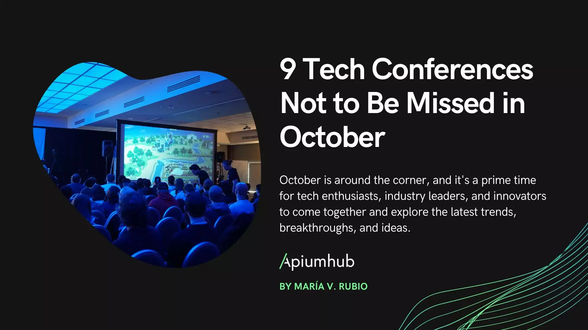
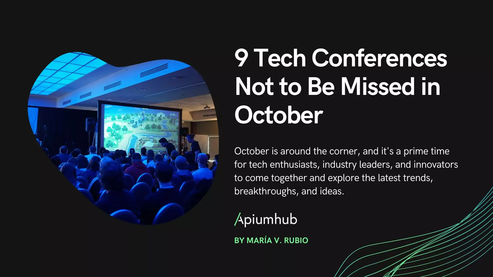

History
TechCon began in 2010 as a small meetup for innovators... It has grown into an annual global event attracting thousands of developers and tech leaders.
TechCon began in 2010 as a small meetup for innovators... It has grown into an annual global event attracting thousands of developers and tech leaders.
TechCon’s mission is to inspire collaboration and accelerate technological innovation across industries.
Notable past speakers include Dr. Jane Smith, AI pioneer, and John Doe, creator of the XYZ framework.